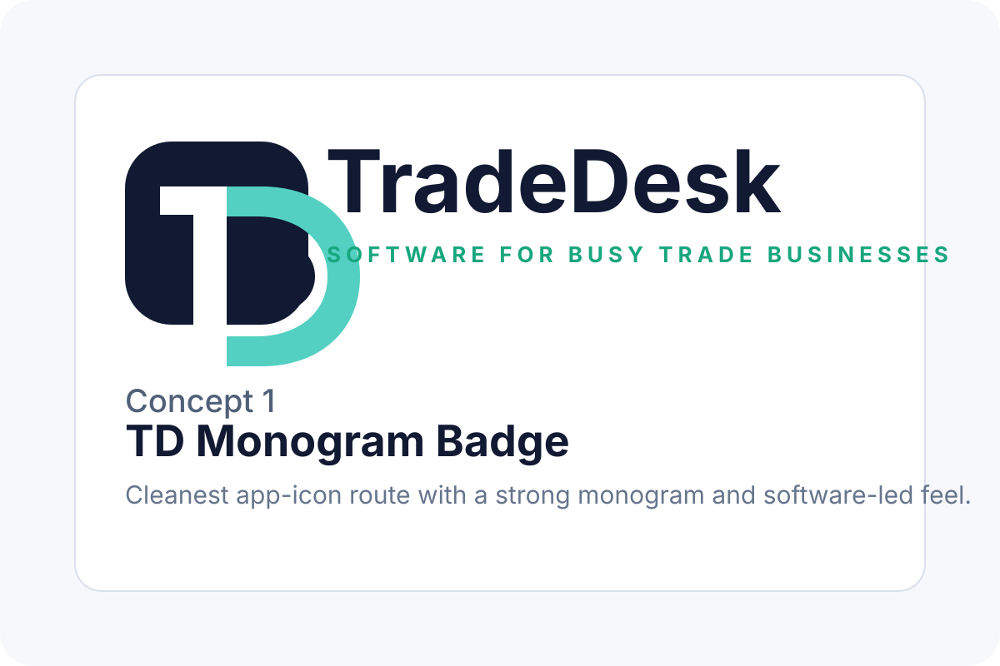
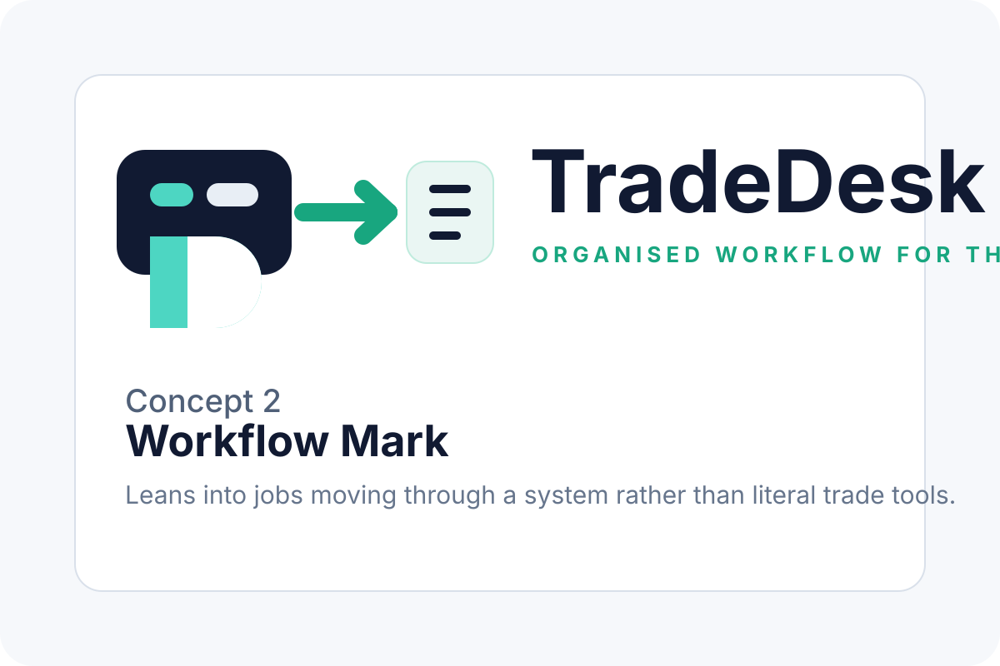
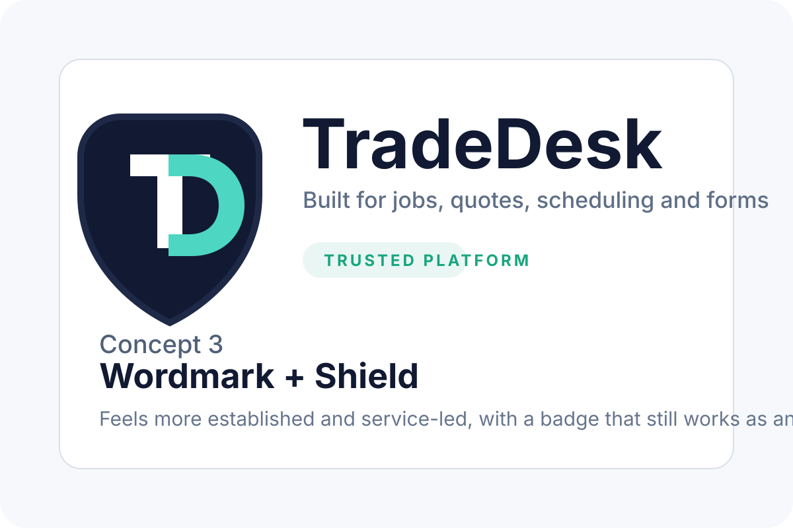

TradeDesk Logo Concepts
Three directions to compare: an app-first monogram, a workflow-led product mark, and a more established wordmark-plus-badge direction.

Concept 1: strongest if you want a memorable app icon and simple brand system.

Concept 2: leans into organisation, movement, and software workflow.

Concept 3: feels more established and service-led while still giving you a badge icon.